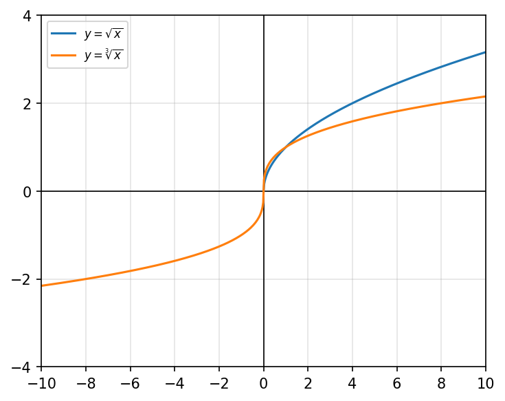
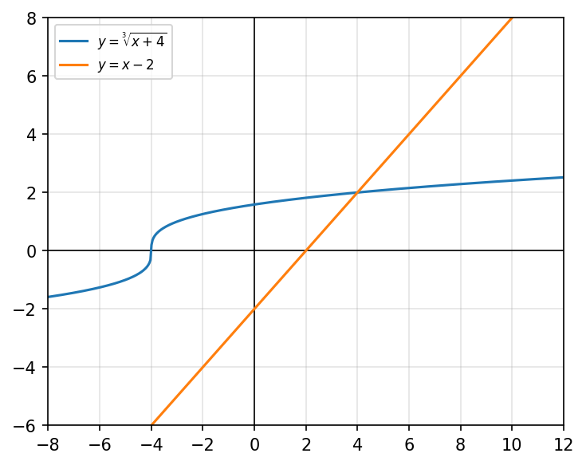
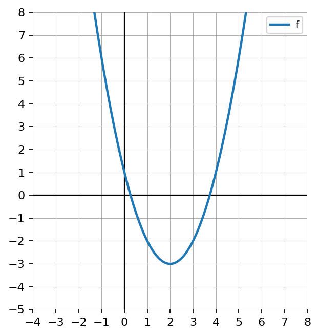
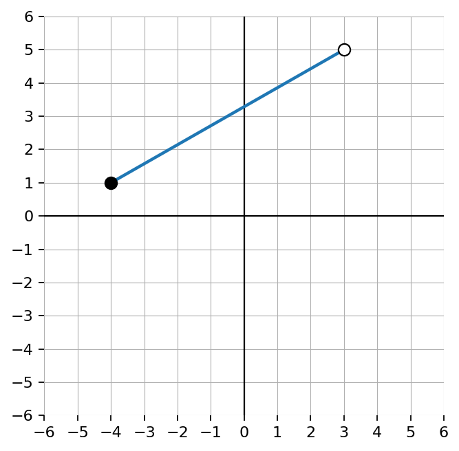
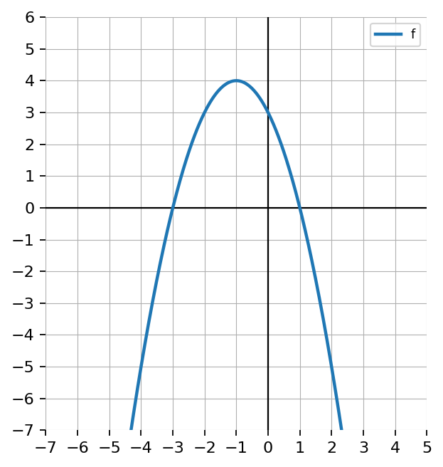
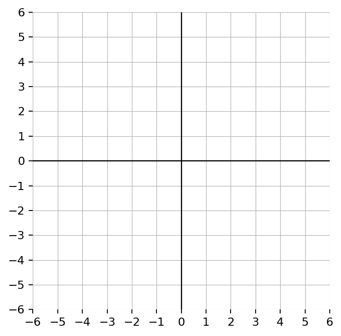

Extra Practice 3.3.4
Precalculus Practice Set
Solve: \[\sqrt[3]{2x+1}=5\]
Solve \[2\sqrt[3]{x-1}-5=7\]
Then verify algebraically.
Compare the graphs of \(y=\sqrt{x}\) and \(y=\sqrt[3]{x}\). Explain how graph structure affects domain, range, number of intersections, and number of solutions.

Create a multi-representation problem involving an equation, a graph, and a table where students solve a cube root equation and explain how all three representations show the same solution.

Use the graph to determine the range of the function. Write your answer in interval notation.

Use the graph to determine the domain of the function. Write your answer in interval notation.

Use the graph to determine the domain and range of the function.
State whether each endpoint is included or excluded in $[-3,7)$.
Determine the domain and range of the graphed function. Use interval notation.

Determine the domain and range of the graphed function. Use interval notation.

Compare the domains of $f(x)=\sqrt{x}$, $g(x)=\sqrt{-x}$, and $h(x)=x^2$. Explain how the structure of each function determines its domain.
Design a graph with domain $(-\infty,1]\cup(3,\infty)$ and range $[-2,\infty)$. Describe the graph or sketch it.
Let \(f(x)=x-2\) and \(g(x)=5x\). Find:
- \((f\circ g)(4)\)
- \((g\circ f)(4)\)
- Explain why order matters.
Use the graph of \(f\) and the graph of \(g\).
- Estimate \(g(1)\).
- Use that result to estimate \(f(g(1))\).
- Estimate \(f(1)\).
- Use that result to estimate \(g(f(1))\).
- Compare the results.

Let \(f(x)=|x|\) and \(g(x)=x-3\).
- Find \(f(g(x))\).
- Find \(g(f(x))\).
- Explain how the graphs would differ.
- Which one has a vertex or corner shifted right? Explain.
Create a composition where the inside function causes a domain restriction even though the outside function appears simple.
- Write \(f(x)\) and \(g(x)\).
- Find \(f(g(x))\).
- State the domain.
- Explain where the restriction comes from.